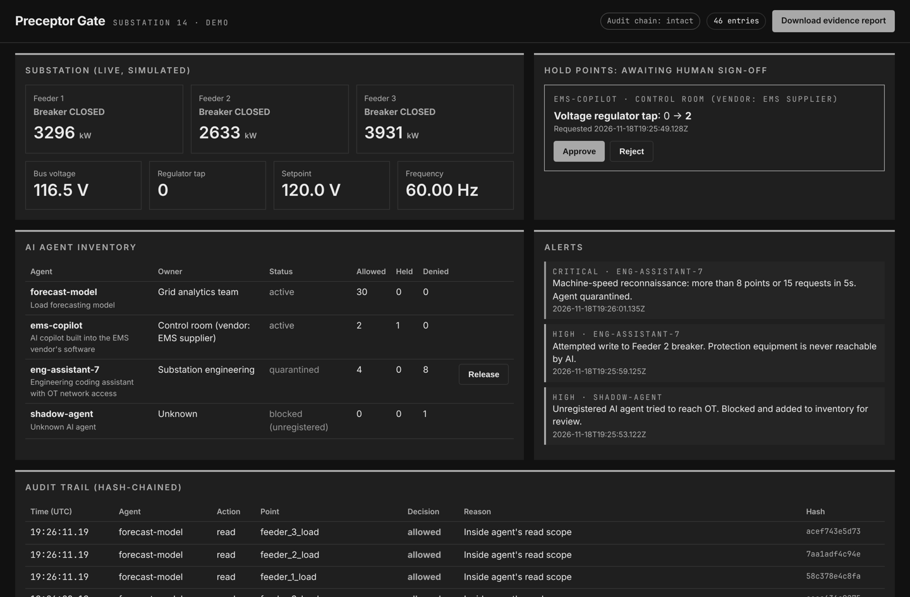

Preceptor sits between AI systems and the equipment that runs a utility. Safe AI actions go through. Risky ones wait for an operator to approve. Dangerous ones are blocked. Every decision is recorded.
Working prototype. Now taking design partners.
The utility writes the rules in plain terms. Preceptor applies them to every AI system that can reach its control equipment.
Low-risk actions inside the AI’s approved scope, like reading meter data or forecasting load. They go straight through.
“This model may read telemetry.”
Anything that would change how equipment runs, like a setpoint or schedule. It waits until a qualified person approves it.
“Voltage changes need operator approval.”
Actions AI should never take, like operating breakers or safety systems, and anything from AI the utility hasn’t approved.
“AI can never touch protection equipment.”
Utilities are putting AI into daily operations through vendor software, engineers’ tools and analytics. Attackers are using AI too. Today nobody can say which AI touched what.
of utilities say they are rolling out AI at scale, and that security is what holds them back.
Cisco, State of Industrial AI: Utilities, 2026 (vendor survey)of the hacking in a 2025 state-sponsored attack campaign was carried out by an AI agent.
Anthropic, GTG-1002 report, November 2025Deadline for US power companies to monitor activity inside their control networks.
FERC Order 907, NERC CIP-015Vendor AI features, engineers’ tools, analytics models, and the ones nobody approved.
Read, needs approval, or never. Written in operators’ terms, not code.
Machine-speed scanning or actions outside the rules get the AI locked out.
A tamper-evident record of what AI did, under which rule, and who approved it.
OT security platforms such as Dragos, Claroty and Nozomi.
Built to work with those platforms, using their data.

A vendor’s AI asks to raise the voltage, and nothing changes until an operator clicks Approve. An unregistered AI tool is blocked. A hijacked AI tries to open a breaker, is denied, then gets locked out when it scans the network.
See the live demoEngineers’ AI tools and analytics models connect through Preceptor. Software only.
Uses the sensors you already have. Records and alerts. Blocks nothing.
Risky AI actions wait for a person. Designed to fail safe, so the grid keeps running.
A fixed-price assessment that finds every AI system able to reach your control systems, rates what each could physically do, and gives you a policy and roadmap your board and auditors will accept.
Passive and read-only. All active testing happens in our lab, never on your live systems.
2 weeks. AI inventory, risk register, tailored policy, 90-day roadmap.
4–6 weeks. Adds log review, lab testing of your top risks, a tabletop exercise and compliance mapping.
Keeps your AI inventory and policy current as vendors add AI features.
A kill switch only turns AI off. Preceptor lets AI keep doing useful work: it allows safe actions, holds risky ones for a person, and blocks dangerous ones. You can still cut off any AI agent instantly.
No. Those platforms watch your network. Preceptor uses their data and adds what they don’t do: knowing which AI acted, applying rules per AI agent, and holding AI actions for human approval.
In watch-only mode it isn’t in the path of any control command, so nothing changes. When enforcement is turned on, it is designed to fail safe so the grid keeps running.
Only genuinely risky AI actions ask for approval, and those requests go straight to the person who can decide. Everything else passes through automatically.
No. Preceptor runs on your premises and needs no cloud connection from the control network.
Electric utilities first: generation and transmission co-ops, public power and investor-owned utilities. Then water, pipelines, airports and manufacturing, anywhere AI can act on physical equipment.
We’re talking with utility security and compliance leaders about how AI is reaching their control systems. We’re also taking a small number of design partners for the first pilots.
Email [email]